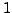

Next:
comp <int> (all except
Up:
Keywords Reference
Previous:
col:time <int> (1)
Contents
col:weights <int>
weights column index (also multiple), starting with , S
IG
S
PEC
manual, p.
Piet Reegen 2009-09-23